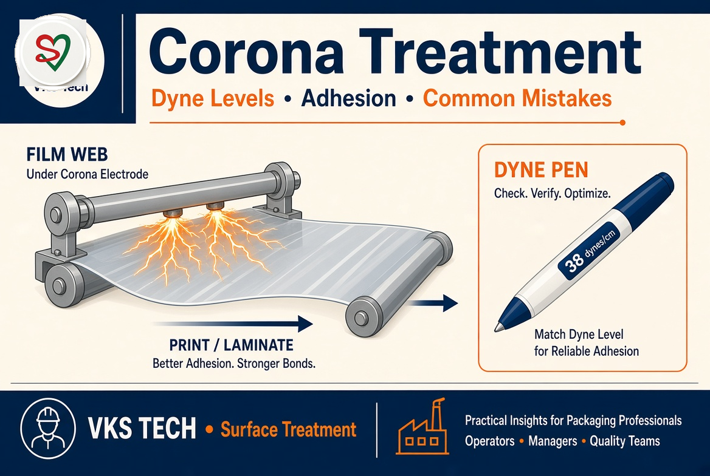
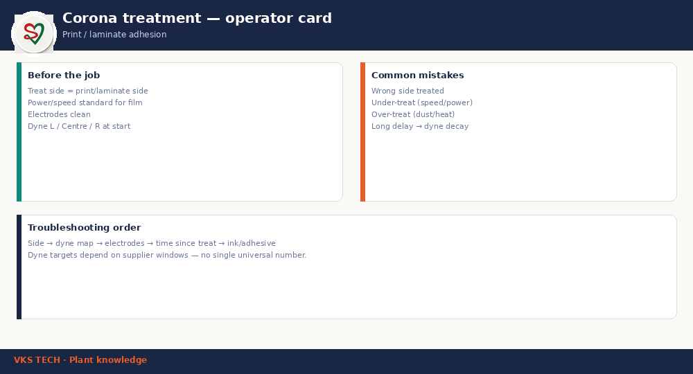

⚡ Corona Treatment — Dyne Levels, Adhesion & Common Mistakes
📖 11-min read | Surface treatment | Print / laminate
Corona is the default surface tool for print and laminate adhesion on many films. Most failures are not “mystery chemistry” — they are wrong side, wrong power/speed, dead electrodes, or dyne decay after storage. This card is for operators and QA who must fix adhesion before the next shift.
- Treat side = print / laminate side — verify every job ticket
- Dyne map L / Centre / R at start — not one random point
- Targets depend on ink/adhesive window — no single universal dyne number
- Delay kills dyne — plan treat-to-print time

1. Before the job
- Confirm treat side matches the structure drawing
- Load power/speed standard for that film family
- Electrodes clean; no heavy ceramic/dust deposit
- Dyne pen or test inks within expiry
2. Common mistakes
- Wrong side treated (classic after reel turn)
- Under-treat: high speed / low power
- Over-treat: dusting, heat damage, brittleness
- Long warehouse delay → dyne decay + slip additive bloom
3. Troubleshooting order
Side → dyne map across width → electrode condition → time since treat → ink/adhesive batch. Only after those, escalate to “need plasma” discussions.
⚡ कोरोना ट्रीटमेंट — डाइन लेवल, आसंजन और आम गलतियाँ
📖 11 मिनट | सरफेस ट्रीटमेंट | प्रिंट / लेमिनेट
कई फिल्मों पर प्रिंट और लेमिनेट आसंजन के लिए कोरोना डिफ़ॉल्ट टूल है। ज़्यादातर फेल्योर “रहस्यमय केमिस्ट्री” नहीं — गलत साइड, गलत पावर/स्पीड, डेड इलेक्ट्रोड, या स्टोरेज के बाद डाइन डिके होते हैं। यह कार्ड उन ऑपरेटर और QA के लिए है जिन्हें अगली शिफ्ट से पहले आसंजन ठीक करना है।
- ट्रीट साइड = प्रिंट / लेमिनेट साइड — हर जॉब टिकट पर वेरिफाई
- डाइन मैप L / सेंटर / R शुरू में — एक रैंडम पॉइंट नहीं
- टारगेट स्याही/एधेसिव विंडो पर निर्भर — कोई एक यूनिवर्सल डाइन नंबर नहीं
- देरी डाइन मारती है — ट्रीट-टू-प्रिंट समय प्लान करें
1. जॉब से पहले
- ट्रीट साइड स्ट्रक्चर ड्रॉइंग से मैच
- उस फिल्म फैमिली का पावर/स्पीड स्टैंडर्ड
- इलेक्ट्रोड साफ; भारी जमाव नहीं
- डाइन पेन / टेस्ट इंक एक्सपायरी के अंदर
2. आम गलतियाँ
- गलत साइड ट्रीट (रील टर्न के बाद क्लासिक)
- अंडर-ट्रीट: हाई स्पीड / लो पावर
- ओवर-ट्रीट: डस्टिंग, हीट डैमेज
- लंबी वेयरहाउस देरी → डाइन डिके + स्लिप एडिटिव ब्लूम
3. ट्रबलशूटिंग क्रम
साइड → चौड़ाई पर डाइन मैप → इलेक्ट्रोड हालत → ट्रीट के बाद समय → स्याही/एधेसिव बैच। इनके बाद ही “प्लाज्मा चाहिए” चर्चा।